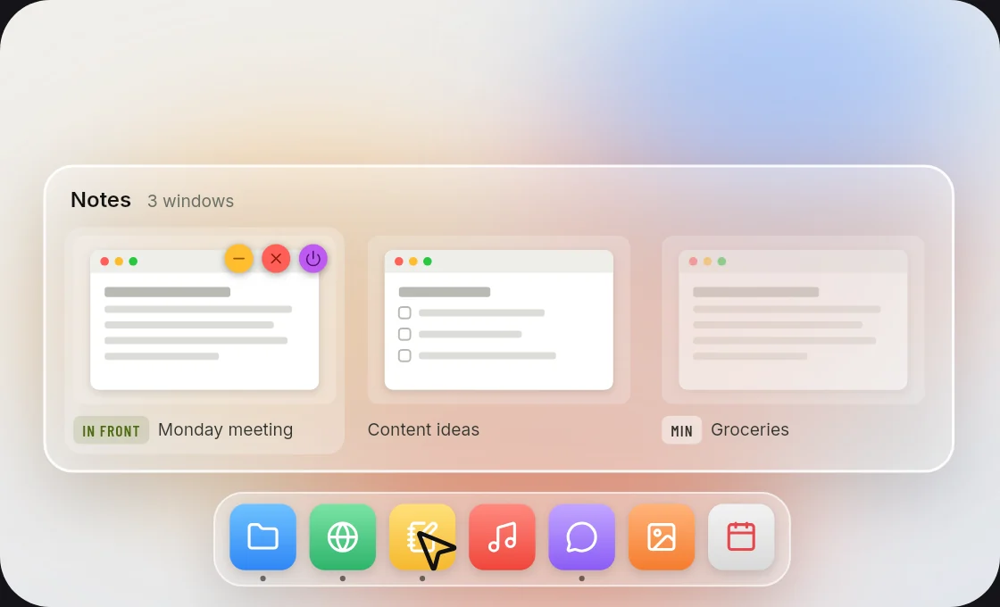

Cut files
⌘X then ⌘V moves files in Finder, just like cutting text. While you type, ⌘X and ⌘V work as usual.
Version 0.1.4 · Free · Open source
Notching turns your MacBook's notch into a calm panel of small tools you use every day. Click the notch and the panel opens.
Download for MacOne click from the panel
In six packs
Download size, no Electron
With the panel closed
01How it works
Click outside the panel or press Esc, and it's gone. Notching also works on screens without a notch and on external displays.
The panel opens right under the notch, on the page you had open last.
Home always comes first and Modules always last. In between go the pages you make, each with its own icon.
Album art and a soundwave while music plays, a countdown while Timer runs, a dot for a reminder you missed.
02Widgets
Every page has four columns. A widget takes one or two of them, plus one strip underneath. Arrange your pages in Settings.
Digital and analog clocks, calendar, world clock
Weather, hourly weather, air quality, moon, sun
Date, prayer times (Kemenag RI method), reminders
This week and what's up next
Breathe, work hours, timer (small and strip)
What's playing, in three sizes, with its controls
Add or remove packs from the Catalog in Settings. Nothing to download: they're all in the app already.
03Modules
They all live on the Modules page, at the right end of the pill. Some open a page of their own, others just run when you click their tile.
CPU, memory, the heaviest apps, heat, network and storage on one page.
Your Mac stays awake until you say so: 1 hour, 2 hours or no limit.
Drag the ruler to set the minutes. The countdown runs beside the notch.
Locks the keyboard so you can wipe it clean. Press Esc five times to get out.
Check your camera before a meeting. Flip, zoom and a light in the color you pick.
Start dragging a file and Shelf opens. Drag copies out anywhere; ⌃⌥V opens it on the screen your pointer is on.
Screen, window or area, straight to the clipboard. With an editor for marking it up.
Clears caches and removes apps with their leftovers. Everything goes to the Trash first.
04Background tools
They work quietly in the background, so they have no tile on the Modules page. Allow Accessibility once; Window peek also asks for Screen Recording to picture your windows.
⌘X then ⌘V moves files in Finder, just like cutting text. While you type, ⌘X and ⌘V work as usual.
Hold ⌃⌥, then an arrow for half the screen, ; ' . / for a corner, \ for the center, and Return to fill the screen. You can change the keys.

Point at a Dock icon to see every window of the app, minimized ones too. Click the icon to minimize them all or bring them all back. ⌘Tab shows every window, with M, W and Q to minimize, close and quit.
Install it from the Catalog in Settings.
05Shortcuts
Every key Notching listens for is in Settings → Shortcuts. Click one, then press the new combination.
06Light
The download. No Electron, no bundled browser: Rust and Tauri, drawing with the web view your Mac already has.
With the panel closed. In an overnight test of 877 samples, it never went above 0.2%.
While you're not looking. Close the panel and every widget and module is unloaded, then loaded again when you open it.
07Private
Only two things leave your Mac: your city name for the weather, and a version check with GitHub.
Allowed once, when a module needs it.
Want out? Settings → Uninstall releases every permission at once.
08Download
The Mac app is signed with a Developer ID and notarized by Apple, so it opens right away.
Get the latest version from the Notching releases page on GitHub.
Open the file, then drag Notching into the Applications folder.
Done. Notching checks for a new version by itself, once a day.
Didn't find your answer?Ask on GitHub